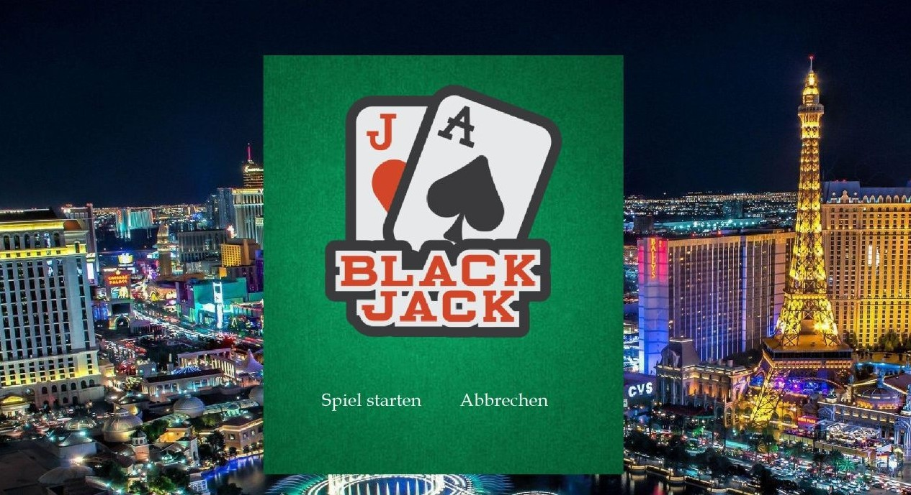
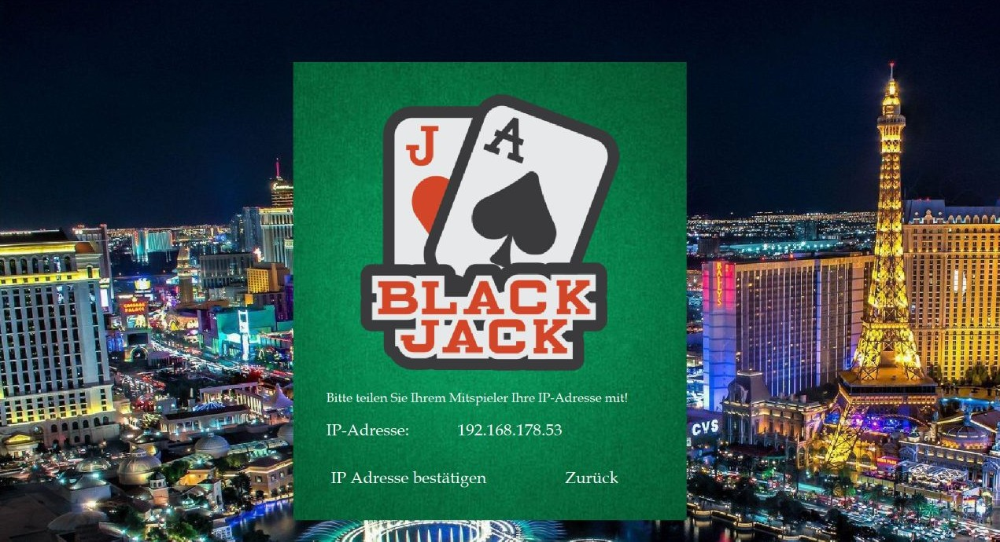
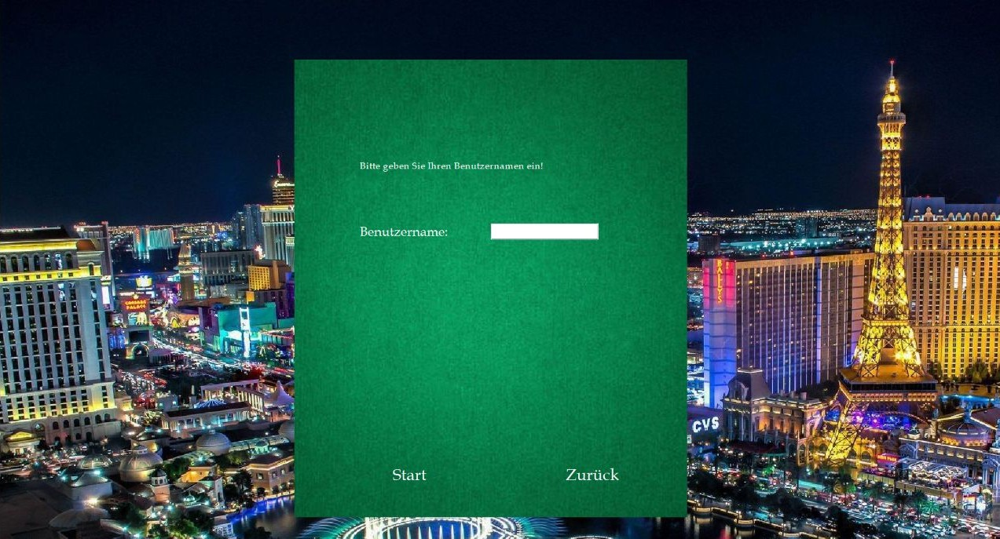
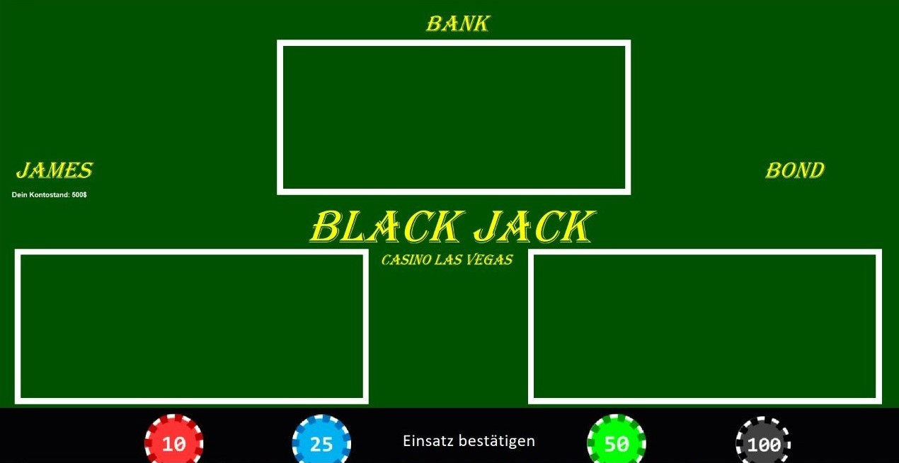
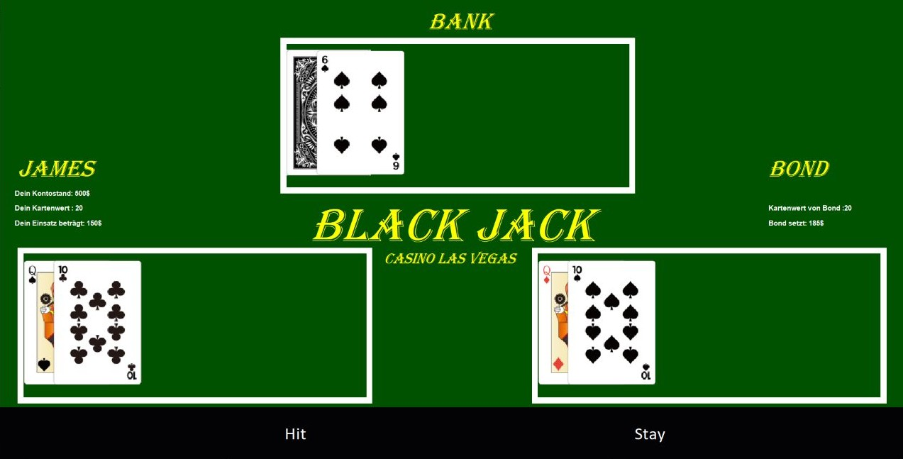
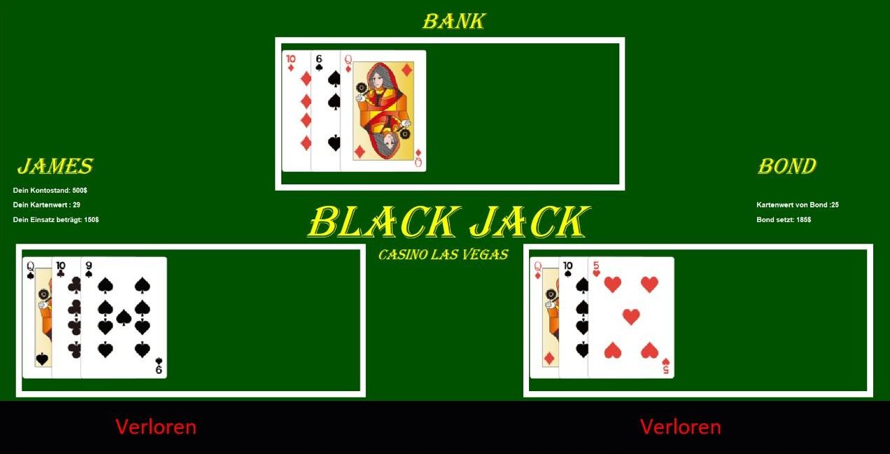

Einleitung

BlackJack ist ein beliebtes Kasinospiel. Es gilt als eines der einfachsten Glücksspiele der Welt und ist, anders als Poker z.B., international einheitlich.
In unserem Fall haben wir einige Anpassungen an das Spiel veranlasst, da der Programmier-Aufwand sonst zu hoch wäre.
Die Regeln sind sehr simpel: Es spielen immer 2 Spieler, voneinander unabhängig, gegen den Dealer. Nach dem Setzen des Einsatzes werden nacheinander Karten ausgeteilt, die einen bestimmten Wert haben. Dabei dürfen beide Parteien den Wert von 21 nicht überschreiten, da sie ansonsten verloren haben. Hat eine der Parteien exakt 21, hat diese ein Black-Jack und gewinnt sofort. Wenn beide Parteien unter 21 sind gewinnt diejenige, die am nächsten an der 21 dran ist. Sonderaktionen, wie z.B. splitten der Karten oder Erhöhung des Einsatzes gibt es nicht.
Kartenwerte: Gespielt wird mit mehreren Decks mit je 52 Karten. Die Faben spielen keine Rolle. Alle Bilder zählen 10, alle Nummerkarten haben den Eigenwert nach ihrer Nummer. Das Ass zählt anders als beim wirklichen Black-Jack immer 11.
Spielablauf
Wie bereits erwähnt gibt es 2 Spieler: einen Host und einen Client. Der eine Spieler öffnet das Programm und wird zum Host dessen. Der andere Spieler tritt diesem bei, indem dieser die IP-Adresse des anderen in das Anmeldefenster eingibt.
Ansicht des Host: / Ansicht des Clients:

Nach dem einloggen geben beide Spieler Ihren Namen ins Anmeldefenster ein.
Ansicht beider Spieler:

Nach dem Eingeben des Namens Starten beide Spieler das Spiel und starten eine Spielrunde gegen den Dealer, welcher ein programmierter Bot ist. Zu Beginn einer Spielrunde wird ein fester Einsatz von allen Spielern gesetzt. Der Einsatz wird durch ein oder mehrmaliges drücken der Jetons platziert.
Ansicht beider Spieler:

Anschließend wird jeder Partei 2 Karten ausgeteilt, welche offen sichtbar liegen aber bei dem Dealer eine davon verdeckt. Danach bekommt der Spieler die Möglichkeit eine weitere Karte zu ziehen (hit = weitere Karte / stay = keine weitere Karte), der Dealer wartet zunächst mit ziehen. Dieses Austeilen an jeden Spieler wiederholt sich so lange, bis einer der beiden Spieler keine Karte mehr möchte oder bereits 3 weitere Karten ausgeteilt wurden. Der Dealer muss danach so lange Karten aufnehemen bis er mindestens den Kartenwert 17 hat, danach zieht dieser keine mehr.
Ansicht der jeweiligen Spieler:

Es gibt beim Gewinnen 2 Möglichkeiten, entweder man liegt näher an dem Wert 21 als die gegnerische Partei, dann hat man "normal" gewonnen. Wenn eine Partei genau 21 hat, dann hat man ein BlackJack gewonnen. Beim Verlieren gibt es ebenfalls 2 Möglichkeiten, entweder man liegt entfernter am Wert 21 als die gegnerische Partei, dann hat man "normal" verloren. Oder man liegt über dem Wert 21, dann hat man sich "überkauft". Wenn der Dealer normal gewinnt oder ein Black Jack hat, bzw. der Spieler normal verloren oder sich überkauft hat, verliert der Spieler seinen gesammten Einsatz. Hat der Dealer normal verloren oder sich überkauft, bzw. der Spieler normal gewonnen, bekommt der jeweilige Spieler einen Gewinn von 2x dessen Einsatz. Wenn der Spieler ein Black Jack hat, gewinnt dieser sofort und bekommt einen Gewinn von 2.5x dessen Einsatz. Wenn einer der Parteien ein BlackJack hat wird die Runde zu Ende gespielt und die Kartenverteilung ausgewertet.
Sowohl der Einsatz der beiden Spieler, als auch deren Kartenwerte sind jederzeit unter deren Namen zu sehen. Der private Kontostand eines Spielers, kann aber nur der Spieler selbst sehen.
Beispiele
1. Beispiel: Es gibt 2 Spieler. James und Bond wollen BlackJack spielen. James entscheidet sich der Host zu sein und startet das Programm "Server". Bond tritt James bei indem er die angezeigte IP-Adresse von James eintippt. Anschließend müssen beide ihren Namen eingeben. Nach drücken beider von der Taste Start beginnt schon die erste Spielrunde: Beide Spieler müssen setzen. Spieler 1 (James) setzt 150€, Spieler 2 (Bond) setzt 185€.
Anschließend werden die Karten ausgeteilt. James bekommt die Karten Pik_Dame und Kreuz_10 und hat somit den Kartenwert 20. Bond bekommt die Karten Karo_Dame und Pik_10 und hat auch den Wert 20. Beide Spieler entscheiden sich dafür noch eine weitere Karte aufzunehmen: Dabei bekommt James eine Pik_9 (geammter Wert: 29) und Bond bekommt eine Herz_5 (gesammter Wert: 25). Beide Spieler haben sich überkauft und somit beide verloren und die Runde wird beendet. Der Dealer hat eine Pik_10 zu Anfang bekommen und danach seine verdeckt liegende Karte aufgedeckt, was eine Karo_10 war. Da ein unter dem Wert 17 liegt, muss er eine weitere Karte aufnehmen. Dies ist eine Karo_Dame. Somit hat dieser sich auch überkauft aber dadurch dass beide Spieler sich ebenfalls überkauft haben sind ihre Einsätze dahin.
Ansicht der jeweiligen Spieler bei der Spielauswertung:

Das war das Handbuch unseres Spiels Black-Jack, wir wünschen euch Viel Spass beim spielen.
Quelle Karten: https://chicodeza.com/freeitems/torannpu-illust.html